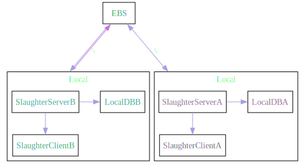
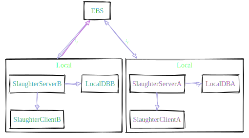
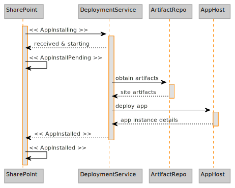
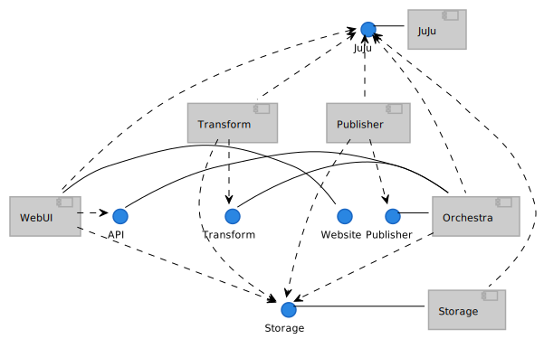
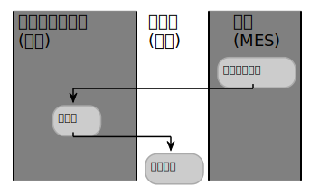
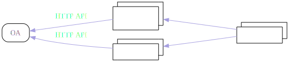

推荐一款 org mode 导出 html 的样式
使用 Emacs 导出 html 样式，类似于 doom emacs doc 的 css style
一个类 doom doc 的 org html 样式模版 点此预览🪄
使用
配置 snippet 模版，然后在 org mode 文件中使用 tt tab 就可展开此模版。
# -*- mode: snippet -*-
# name: title
# key: tt
# --
#+title: `(file-name-sans-extension (buffer-name))`
#+SUBTITLE: this is subtitle
#+AUTHOR: autor
#+HTML_HEAD: <script src="scroll.js"></script>
#+HTML_HEAD: <link rel="stylesheet" type="text/css" href="org_css.css"/>
#+HTML_HEAD: <script src="https://cdnjs.cloudflare.com/ajax/libs/jquery/3.3.1/jquery.min.js"></script>
#+OPTIONS: prop:nil timestamp:t \n:t ^:nil f:t toc:t author:t num:t H:2
#+LATEX_COMPILER: xelatex
#+LATEX_CLASS: elegantpaper
#+MACRO: htmlred @@html:<font color="red"></font>@@
#+MACRO: latexred @@latex:{\color{red}@@@@latex:}@@
#+latex:\newpage
想使用在线版的静态文件，可以使用下面的配置进行替换
#+HTML_HEAD: <link href="https://emacs-1308440781.cos.ap-chengdu.myqcloud.com/org_css.css" rel="stylesheet"></link>
#+HTML_HEAD: <script src="https://cdnjs.cloudflare.com/ajax/libs/jquery/3.3.1/jquery.min.js"></script>
#+HTML_HEAD: <script src="https://emacs-1308440781.cos.ap-chengdu.myqcloud.com/scroll.js"></script>
字体样式
| 粗体 | bold |
| 斜体 | italic |
| 下划线 | underlined |
| 中横线 | |
| 代码，按键 | code |
特殊说明
quote 摘要、引用
可使用`quote`来进行代码块补全，表示摘要，引用
TECO - Tape [later text] Editor/COrrector
A combination text editor/really horrible ProgrammingLanguage. To quote the paper “RealProgrammers don’t use Pascal” (1983):
notice 注意事项、提醒
你有许多已标记的项目并且你可能错过一个重要的项目时，提醒可以提供帮助
Please do not file or answer Doom Emacs issues on Reddit, Twitter, or StackOverflow. Kindly refer them to this section.
这是 1 个例子
段落及高亮
Example of an comment.
原文：用友 bip 产品功能说明 ，在说明文档
大数据中 最宝贵 、最难以代替的就是数据，一切都围绕数据。
HDFS 是最早的大数据存储系统，存储着宝贵的数据资产，各种新算法、框架要想得到广泛使用，必须支持 HDFS，才能获取已存储在里面的数据。所以大数据技术越发展，新技术越多，HDFS 得到的支持越多，越离不开 HDFS。HDFS 也许不是最好的大数据存储技术，但依然是最重要的大数据存储技术。
HDFS 是如何实现大数据高速、可靠的存储和访问的呢？
- Hadoop 分布式文件系统 HDFS 的设计目标是管理数以千计的服务器、数以万计的磁盘，将大规模的服务器计算资源当作一个单一存储系统进行管理，对应用程序提供数以 PB 计的存储容量，让应用程序像使用普通文件系统一样存储大规模的文件数据。
表格
C-c ~ to convert to tabel.el table
C-c ~ to convert to org table
org table M-h M-l for move Columns left and right
org table M-k M-j for move Rows up and down
# table.el for merge Columns or Rows
| N | N^2 | N^3 | N^4 | sqrt(n) | sqrt[4](N) |
|---|---|---|---|---|---|
| 1 | 1 | 1 | 1 | 1 | 1 |
| 2 | 4 | 8 | 16 | 1.4142136 | 1.1892071 |
| 3 | 9 | 27 | 81 | 1.7320508 | 1.3160740 |
| Student | Prob 1 | Prob 2 | Prob 3 | Total | Note |
|---|---|---|---|---|---|
| Maximum | 10 | 15 | 25 | 50 | 10.0 |
| Peter | 10 | 8 | 23 | 41 | 8.2 |
| Sam | 2 | 4 | 3 | 9 | 1.8 |
| Average | 25.0 |
| Format | Fine-grained-control | Initial Effort | Syntax simplicity | Editor Support | Integrations | Ease-of-referencing | Versatility |
|---|---|---|---|---|---|---|---|
| Word | Word^2 | Word^3 | Word^4 | sqrt(Word) | sqrt(sqrt(Word)) | 2 | 2 |
| LaTeX | LaTeX^2 | LaTeX^3 | LaTeX^4 | sqrt(LaTeX) | sqrt(sqrt(LaTeX)) | 4 | 3 |
| Org Mode | Org^2 Mode^2 | Org^3 Mode^3 | Org^4 Mode^4 | sqrt(Org Mode) | sqrt(sqrt(Org Mode)) | 4 | 4 |
| Markdown | Markdown^2 | Markdown^3 | Markdown^4 | sqrt(Markdown) | sqrt(sqrt(Markdown)) | 3 | 1 |
| Markdown + Pandoc | (Markdown + Pandoc)^2 | (Markdown + Pandoc)^3 | (Markdown + Pandoc)^4 | sqrt(Markdown + Pandoc) | sqrt(sqrt(Markdown + Pandoc)) | 3 | 2 |
awk 表格
| aardvark | 555-5553 | 1200/300 | B |
| alpo-net | 555-3412 | 2400/1200/300 | A |
| barfly | 555-7685 | 1200/300 | A |
| bites | 555-1675 | 2400/1200/300 | A |
| camelot | 555-0542 | 300 | C |
| core | 555-2912 | 1200/300 | C |
| fooey | 555-1234 | 2400/1200/300 | B |
| foot | 555-6699 | 1200/300 | B |
| macfoo | 555-6480 | 1200/300 | A |
| sdace | 555-3430 | 2400/1200/300 | A |
| sabafoo | 555-2127 | 1200/300 | C |
/foo/ { print $0 }
| fooey | 555-1234 | 2400/1200/300 | B |
| foot | 555-6699 | 1200/300 | B |
| macfoo | 555-6480 | 1200/300 | A |
| sabafoo | 555-2127 | 1200/300 | C |
表格自增 id
| 0 | 字段名 | 名称 |
| 1 | age | 年龄 |
| 2 | bir | 出生年月日 |
#+tblfm: $1=@#-1
C-c C-c to execute it
LaTex 公式
$\mbox{需求的价格弹性系数} = \frac{\mbox{需求的变动率}}{\mbox{价格的变动率}}$
$$\mbox{需求的价格弹性系数} = \frac{\mbox{需求的变动率}}{\mbox{价格的变动率}}$$
$$\begin{aligned} \cos 3\theta & = \cos (2 \theta + \theta) \ & = \cos 2 \theta \cos \theta - \sin 2 \theta \sin \theta \ & = (2 \cos ^2 \theta -1) \cos \theta - (2 \sin \theta\cos \theta ) \sin \theta \ & = 2 \cos ^3 \theta - \cos \theta - 2 \sin ^2 \theta \cos \theta \ & = 2 \cos ^3 \theta - \cos \theta - 2 (1 - \cos ^2 \theta )\cos \theta \ & = 4 \cos ^3 \theta -3 \cos \theta \end{aligned} $$
Org 代码
代码片段开启行号，修改 `~/.emacs.d/.local/straight/repos/org/lisp/ox-html.el`
(let* ((code-lines (split-string code "\n"))
(code-length (length code-lines))
(num-fmt
(and num-start
(format "%%%ds "
(format "%%%ds: "
Java 代码
/**
* @param request 调用的请求参数
* @param needLog true 需要记录日志 false 不记录日志
* @return
*/
protected NcApiResponse runApply(NcApiRequest request, Boolean needLog) {
NcApiResponse ncApiResponse = null;
try {
final NcApiRequest ncApiRequest = executeBefore(request);
ncApiResponse = executeGetRequest(ncApiRequest);
} catch (Exception e) {
afterExecute(needLog, e, request, ncApiResponse);
if (e instanceof BizException) {
throw new BizException("NC 提示", ((BizException) e).getErrorMsg(), e);
} else {
throw new BizException("NC 异常", e.getMessage());
}
}
return ncApiResponse;
}
babel java
List<Integer> a = Arrays.asList(1, 2);
List<Integer> a = Arrays.asList(1, 2);
List<Integer> a = Arrays.asList(1, 2);
List<Integer> a = Arrays.asList(1, 2);
List<Integer> a = Arrays.asList(1, 2);
return a;
C-c C-c to execute it, but export to html will fail when the babel java result generated.
图片
引用本地图片
引用网络图片
dot graphviz
-
dot

-
dot sk

plantuml
-
plantuml with style css
plantuml 替换原生样式
DARKO RANGE/LIGHTORANGE/DARKBLUE/LIGHTBLUE/DARKRED/LIGHTRED/DARKGREEN/LIGHTGREEN!define LIGHTORANGE !includeurl C4-PlantUML/juststyle.puml
-
plant uml 系统 Contex 架构图
plantuml 替换原生样式
DARKORANGE/LIGHTORANGE/DARKBLUE/LIGHTBLUE/DARKRED/LIGHTRED/DARKGREEN/LIGHTGREEN!define LIGHTBLUE !includeurl C4-PlantUML/juststyle.puml
-
泳道图

-
plantuml htmlstyle

org 转 Word
pandoc -o ~/Desktop/out.docx ~/.doom.d/README.org
插入时间
C-c . |
插入当前时间 |
K |
lask week |
J |
next week |
L |
next day |